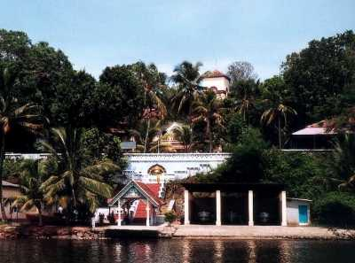
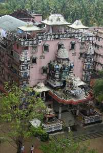
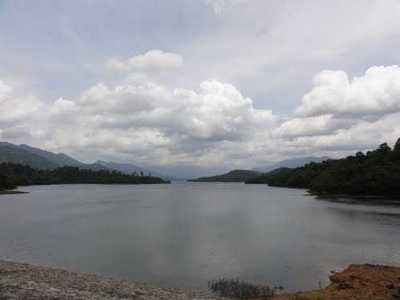
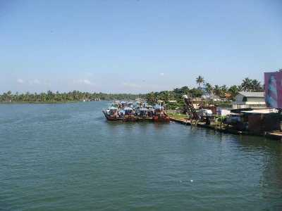

Thevalli Palace

A place of great historic importance, Thevally Palace is situated on the banks of Ashtamude Lake. Once served as the home of Maharaja of Travancore, it was constructed under the rule of Gauri Parvathi Bai between 1800 and 1819.
The striking feature about the palace is that it presents an intriguing fusion of Dutch, English and Portuguese style of architecture.
Amritapuri

Ashram of Amritapuri has been constructed at the same place where Sri Mata Amritanandamayi Devi was born. People from all over the world, flock in to seek the blessings of Amma. The people residing in the ashram and all the disciplines of Amma have given up their life in the salvation of God and making the world a better place to live in. Amma makes sure to listen to each and every child who comes to her 'darshan' and solve each of their problems with an effective solution.
Jatayu Earth's Centre

Jatayu Nature Park is a rock-themed park which got opened on November 25, 2017. Built to promote mythology and adventure tourism, the tourism centre boasts of 6D theatre, a digital audio-visual room, cable car and ayurvedic cave resort. It is also a home to umpteen adventure activities including paintball, laser tag, archery, bouldering, rock climbing, air-rifle shooting etc. The primary attraction of the park, however, is the world's largest stone-cut bird sculpture replicating Jatayu, the mythical bird from Ramayana.
Punalur

Punalur, lying along the border of Tamil Nadu and Kerala in the district of Kollam, derives its name from two words one Tamil and one Malayalam. Tamil word 'punal' means water and Malayalam word 'ooru' means place together making Punalur the place of water. Indeed Kallada flows right through the heart of the city with the famous suspension bridge hanging over it, stretching for 400 metres across its width. Panalur is known as "Pepper Village of Kerala" and is also houses a major Paper Mill established in 1850's.
Panalur has lovely woods of pineapples, coconut and palm trees, cinnamons and other spices and has exciting adventure sports and exotic jungle experiences in the Thenmala Ecotourism Park.
Palaruvi Waterfalls

Palaruvi Falls, cascading downstream from the height of 300 ft, is one of the prime attractions in Kutrallam or as some call it Courtallam, Tamil Nadu. Owing to its height; it is the 32nd highest fall in our country. The name Palaruvi means 'Stream of Milk' in the regional language. Ironically it seems to be a glittering stream of milk as it flows down. Hence, the beauty of this fall stands unimaginable till witnessed with own eyes. The roaring sounds of the fall stand in stark contrast to the silence of the forests and mist-kissed mountains around it.
Ashtamudi Lake

The second largest lake in Kerala, Ashtamudi Lake is situated in the Kollam district. The lake runs over a length of 16 kilometres and covers almost 30% of the town of Kollam. Its name, Ashtamudi has been derived from two words 'Ashta' meaning eight and 'Mudi' meaning branch, thereby stating the fact that lake has eight branches. All the eight branches converge into a single channel that meets with the Arabian Sea. The lake is fed by the major river, Kallada. Coconut trees and palms surround the entire vicinity of the lake adding to its beauty.
Shenduruny Wildlife sanctuary

A part of the Agasthyamalai Biosphere Reserve, Shenduruny Wildlife sanctuary is a paradise for wildlife lovers. Declared as a wildlife sanctuary in 1984, one can also see Parappara Dam in the forest constructed across the Shenduruny and Kulathupuzha River.
Neendakara Port

Neendakara Port situated nearly 8km from kollam Town serves as a major fishing hub in the area. Other than that it is also a headquarters of Indo-Norwegian Fisheries Community Project commenced in year 1953.